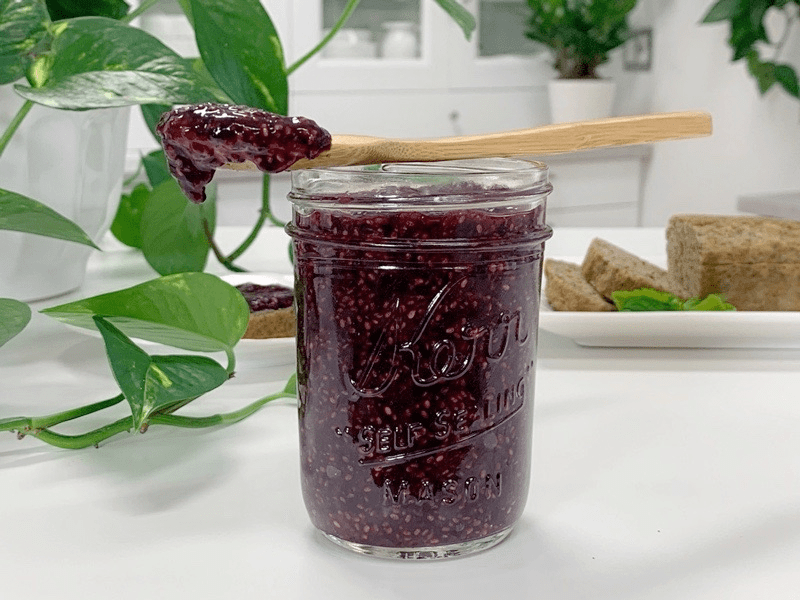
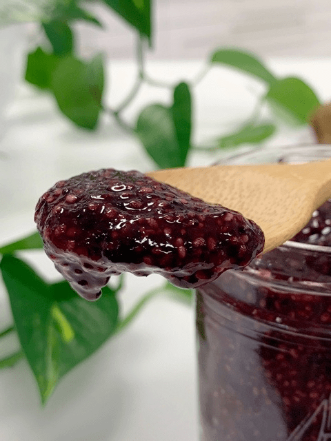

Blueberry Mint Chia Jam
– raw, vegan, gluten-free, nut-free –
This is an excellent template for creating, quick, easy, healthy, and wonderfully delicious jams! Use any fruit that is in season, or you can use organic frozen fruits that are available all year round.

The star ingredient…
is the chia seeds. If you are new to using them, they absorb any fluid that you put them into, increasing the volume up to nine times! The seeds create a mucilage which works amazingly as a binder and thickener. In the recipe when you combine the natural pectin found in the blueberries and the chia seeds… you have a magical marriage made in superfood heaven.
Did you know that chia seeds are related to the mint family? So naturally, I thought the two would play well together. Menthol is the active ingredient in mint that gives it its characteristic flavor and is considered an aid in digestion and a stomach-calmer. The crisp, clean scent also has applications in aromatherapy. So while you are mincing the mint for this recipe, take a leaf and pinch it, then inhale deeply. Might as well take advantage of it all. :)
Chia is wealthy in omega-3 fatty acids, even more so than flax seeds. They also have another advantage over flax seeds… chia is so rich in antioxidants that the seeds don’t deteriorate and can be stored for long periods without becoming rancid.
And, unlike flax, they do not have to be ground to make their nutrients available to the body. Chia seeds also provide fiber (25 grams contain 6.9 grams of fiber) as well as calcium, phosphorus, magnesium, manganese, copper, iron, molybdenum, niacin, and zinc.
If the small chia seeds bother you, you can grind them in a spice grinder then use it as instructed. This jam is perfect for slathering on a piece of raw bread, eaten straight off the spoon, or put a tablespoon or more in your next smoothie! If you are vegan, you can replace the raw honey with a sweetener of your choice. Enjoy.

Ingredients:
Yields 1 cup (227 g)
- 1/4 cup (60 g) water
- 2 Tbsp (28 g) chia seeds
- 1 cup (165 g) organic blueberries
- 1 Tbsp (20 g) raw honey or maple syrup
- 1 pinch Himalayan pink salt
- 1 tsp minced mint leaves
Preparation:
- In a small bowl combine the water and chia seeds. Stir and set aside to thicken.
- In the food processor, fitted with the “S” blade, add the blueberries, honey, salt, and leaves.
- Add the chia seeds once all of the water is absorbed. This doesn’t take long.
- If it still feels too liquidity, add another teaspoon of chia seeds, let it rest for 15 minutes, and check again. Sometimes blueberries can be juicier than other times.
- Process everything together for about 30 seconds. Best to let the jam sit overnight to let the mint meld into the other flavors, but not required.
- Store in a mason jar in the fridge for 1 week.
© AmieSue.com